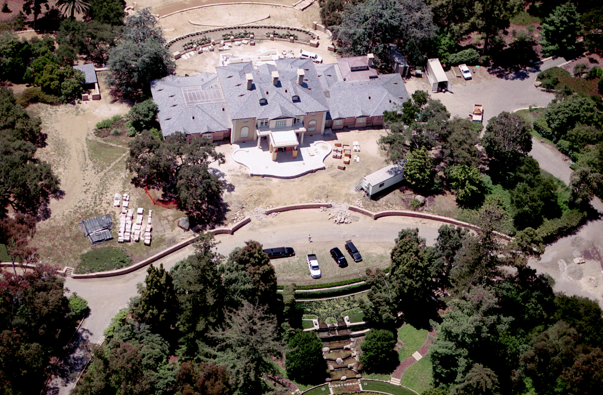

PROMISED LAND
Oprah Winfrey’s house, named “The Promised Land,” is located
in Montecito, CA. Inside the approximately 23,000 sq. ft. Neo-Georgian
style mansion, there are six bedrooms, 14 bathrooms, a gourmet kitchen
and wine cellar, library, theater, and 10 fireplaces. Interestingly enough,
it doesn’t appear that there is a swimming pool in the backyard, which is
a very common addition to any California mansion.

LOCATION
Montecito, California
PRICE
$88,000,000